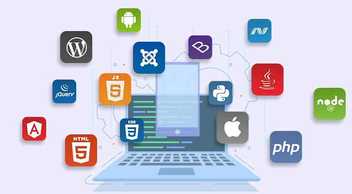

Professional IT Consulting Services Techinnova Ltd offers
professional IT consulting services focused on helping businesses
to make the best possible use of information technology. These
solutions boost the overall performance and profitability of our
customers.
As a dynamic company, the length of the contract is not an issue.
Contracts can be as short as a few days or on going, depending on
the nature of your needs. Our UK based Professional IT consulting
services can assist in improving performance, reliability and
scalability of your infrastructure. Business information
technology consultancy is a field that focuses on advising
businesses on the optimum use of IT to meet their commercial
objectives. In addition alongside advice, IT consultancies often
implement, deploy and administer IT systems on businesses’ behalf.

Techinnova Ltd ensures to deliver world-class professional
websites by applying the latest Web Development Technologies and
Agile Web Development Methodology. It takes full advantage of the
web capabilities for a multitude of Website Development Services
for global clients that bring good business at your doorsteps. Our
web design and development team come up with a detailed
cost-benefit analysis for the project with an output of a
realistic plan.
For more than 20 years our experts have been accomplishing enough
with modern Web Development, best UI Designs, UX Expertise,
mastery in Testing landscapes, new generation programming
language, unbeatable DevOps, and Full Stack developers to deliver
cost-effective solutions.
-
Research :
Our development process starts with understanding your needs,
business queries, analysis and research and according we develop
an appropriate timeline and project plan.
-
Design :
We design sophisticated user experience and modern web interface
for each custom element and functionality to deliver your brand
image and drive conversions.
-
Develop :
We take care of the appropriate implementation of your mission
from a beautiful design to a custom-coded website. We create the
most effective solution to convert your business query into the
final product.
-
Quality :
Throughout the quality assurance process including performance
testing and security endorsement, we resolve any potential
problems for truly qualitative bug-free solutions.
-
Deploy :
We optimize the configuration process and deploy from a single
place to manage releases, automate deployments, and keep your
web solution running and scaling with minimal resources.
-
Maintain :
Our team will not only launch but also support the delivered
product, and make upgrades on an ongoing basis to provide robust
security standards, and greater performance.
OUR OFFERING
Professional IT Consulting Services Techinnova Ltd offers
professional IT consulting services focused on helping businesses
to make the best possible use of information technology. These
solutions boost the overall performance and profitability of our
customers.
As a dynamic company, the length of the contract is not an issue.
Contracts can be as short as a few days or on going, depending on
the nature of your needs. Our UK based Professional IT consulting
services can assist in improving performance, reliability and
scalability of your infrastructure. Business information
technology consultancy is a field that focuses on advising
businesses on the optimum use of IT to meet their commercial
objectives. In addition alongside advice, IT consultancies often
implement, deploy and administer IT systems on businesses’ behalf.
-
END-TO-END DEVOPS SERVICES : From initial strategy and
planning through delivery and support, we have the DevOps
expertise, process and tools to accelerate the integration of
your dev/ test efforts and increase your level of automation so
you can produce higher quality applications and services faster
and more efficiently.
-
END-TO-END DEVOPS SERVICES : From strategy and planning
through implementation and training services.
-
CONTINUOUS INVESTMENT & INNOVATION : A large pool of
certified Jenkins engineers, R&D investment, dedicated Labs.
-
UNMATCHED DEVOPS EXPERTISE : Best practices in DevOps,
Continuous Integration and Continuous Delivery.

We are offering them state-of-the-art quality assurance software
testing services.
-
We have strong software testing delivery model that allow us to
release bug-free software / applications
-
Our professional team of test engineers have a vast experience
of software testing services
-
Our quality software testing services includes test plan, test
cases, execution, defect reporting, defect analysis, risk
assessments and recommendations your Software bug-free, secure &
fragile? ANGLER's proven software testing methodologies can help
you get rid of the bugs without any hassle.
-
We adopt rigorous quality assurance and management procedures to
ensure the lowest defects level
-
With the intent of finding software bugs, we offer flexible
solution to meet your testing needs
-
Our test engineers have amazingly diverse skill sets that all
contribute to their testing effectiveness
- We help you battle the bugs out of your software!
Automation Software Testing Services is destined to reduce manual
efforts and repetitive works with us you can
-
Increase the efficiency & effectiveness of the application
- Reduce costs
- Replicate testing across different platforms
-
Execute different complex test cases and achieve expected
quality
- Achieve Consistent and Accurate results
- Reuse test scripts
- Minimize Manual Intervention
Automation testing using software is becoming vital with rising complexity of software applications and subsequent test maintenance needs in quick turnaround times. Automated software testing is done with the objective to resolve any defects before they reach production.Use of automation technology all through software testing lifecycle enables the team to test faster, increases test accuracy and productivity.
The Quality Assurance team at Angler has immense domain expertise in automated software testing. By providing a suite of tests using an automated test tool, we boost client satisfaction and help minimize time to market. With reliable tools we carry out the test case suite repeatedly when the software is changed or it is being developed. Our Automation testers try various input scenarios and compare test results with expected behaviors. We ensure that our managed processes facilitate the client to work seamlessly with new products and services. Test Automation helped us massively to meet customer demands.
Our Test Automation services includes :
- Selection of suitable test tools
- Identification of test scenarios which are to be automated
- Setting up Test environment for Automation
- Test browser compatibility and system functionality
- Testing of software on different platforms with various configurations
- Generation of Automation Test Report
- Test Script Maintenance
We do App functional, performance and usability testing Services crucial to ensure the quality of your mobile apps
- Identify issue ahead of customer
- Ensure that your mobile app meets business goals
- Enhance and enrich user mobility experience
- Compatibility with various devices and OS version
- Quicker time to market
As people have become more tech savvy, businesses have to embrace technology that helps them reach their target market. Increased use of smart phones and tablets has led to development of mobile apps. No doubt, Mobile apps have put business operations into the hands of consumers and it allows user to browse through and place orders from the convenience of their handheld devices. Mobile app consumers are said to expect 5 star experience and immediate response. If your app doesn’t perform to their expectation they will just find another that works, so all you need to do is mobile app testing. Mobile application testing is the foremost thing every app should undergo before they become available to the public. To make sure the application works perfect you must do comprehensive testing and ensure that yourmobile app meets customer expectations and business goals. Mobile app testing is
too complex as Mobile app testers have to test functionality, usability and consistency of the app across wide range of handheld devices and models, wireless carriers, OS, browsers and location.
- Check the basic user experience & navigations
- Operations with memory & control of memory leaks
- Application stability on incoming / outgoing calls & stress/ recovery from failures.
- Intensity of power consumption & sensitivity to charge
- Support for various screen resolutions & screen sizes
- Check Orientation & Connectivity
- Install / remove applications properly in Phone / External memory
- Test Audio Functionality (especially game applications)
Actually, testing a single application across multiple devices running on the same platform and different platform poses unique challenges for testers. Understanding these challenges and developing test strategies that overcome them is the need of the hour. Mobile app testers at ANGLER do test the app for best results.
Functional Testing – To ensures that the application is working as per the requirements. Most of the test conducted for this is driven by the user interface and call flows.
Usability Testing - is carried out to verify if the application is achieving its goals and getting a favorable response from users. This is important as the usability of an application is its key to commercial success
Performance Testing – This testing process is to verify the performance and behavior of the application under certain conditions such as low battery, bad network coverage, low available memory, simultaneous access to application’s server by several users and other conditions. Performance of an application can be affected from two sides: application’s server side and client’s side.
Memory Leakage Testing – Memory leakage happens when a computer program or application is unable to manage the memory it is allocated resulting in poor performance of the application and the overall slowdown of the system. As mobile devices have significant constraints of available memory, memory leakage testing is crucial for the proper functioning of an application.
Interrupt Testing- An application while functioning may face several interruptions like incoming calls or network coverage outage and recovery. We have experience & resources who worked on more challenging and rewarding projects. If you need our first rate support service outsources your Mobile App Testing projects & free up your team so as to focus on your core works.
Security testing services protects your application from ever growing cyber security threats that exist in the world of technology.
- Evaluate effectiveness of controls and encrypt the application
- Build security layers for your application and maintains functionality as intended
- Ensure data integrity by preventing unauthorized usage
- Check for compliance with regulatory requirements and standards
With the cyber world becoming more-and-more vulnerable to attacks, security is something that cannot be compromised. In order to develop secure applications, security elements such as integrity, confidentiality, authenticity must be considered and tested. Life cycle of any application development must possess security testing to ensure data leakage, flawless functioning, compliance to standards and security vulnerability assessment.
As security attacks have grown exponentially to succeed in this threatening landscape of technology organizations must consider security testing which prevent the application from vulnerabilities. Web Applications in general will hold sensitive business and customer data, to prevent hackers from entering and damaging your networks and applications you must identify where they are vulnerable and take the corrective measures to prevent as well rectifies the gaps in security.
Our software security testers are skilled enough to protect your application from security violation or unintended penetration. They will help you ensure your app doesn’t fall victim to common vulnerabilities and take a deeper look to identify any weak points hackers can exploit. Any deals with a mobile app, web app, API, or another platform can be taken care based on coverage of the classes of vulnerabilities identified in the OWASP top 10 categories including the following three areas: Insecure Interaction between components, Risky Resource Management and Porous Defenses. We help you assess the gaps and protect your applications through data leak prevention, static and dynamic masking.
- Cross-Site Scripting (XSS)
- Injection
- Broken Authentication and Session Management
- Insecure Direct Object Reference
- Cross-Site Request Forgery (CSRF)
- Security miss configuration
- Insecure Cryptographic Storage
- Failure to Restrict URL Access
- Insufficient Transport Layer Protection
- Unvalidated Redirects and Forwards
testscan either be a one-time project or can be
scheduled on need basis, following application version upgrade or release.
- Trust of users / customers
- Better protection of Business information
- Risks significantly mitigated
- Quality levels improved
- Meet regulatory requirements & avoid fines
- Preserve corporate image & customer loyalty
- Avoid the cost of network down time
We have testing resources that can make sure that your sensitive business data would not be compromised in the face of hacking attempts. If you need our support service outsource your Security Testing projects to us.
We do Performance testing and confirm the software meets speed, scalability and stability requirements under expected workloads.
- Determine the response time of the application
- Verify maximum user load the application can handle
- Assure application stability under varying loads
- Eradicate poor usability. inconsistency across different operating
systems
- Identify the system / workload that cause the system to perform badly
Performance testing is necessary to evaluate various quality attributes & identify what need to be done before the product is marketed. By doing software performance testing you can get the most out of your application as well achieve customer satisfaction & loyalty. For any application usability, loading speed & scalability are the parameters that confirm the performance of the application over a period of time.
We do performance testing and gather metrics useful for tuning the system, identify bottlenecks such as database configuration, coding errors, hardware issues etc, analyze maximum number of sessions that can be active at once and provide reports to business stakeholders regarding performance against expectations. It helps you to know the largest number of concurrent users the system is expected to support at any given moment.
- Gather or elicit performance requirements (specifications) from users and/or business analysts
- Develop a high-level plan (or project charter), including requirements, resources, timelines and milestones
- Develop a detailed performance test plan (including detailed scenarios and test cases, workloads, environment info, etc.)
- Create the performance tests according to your test design
- Execute and monitor the tests
- Consolidate, analyze and share the test results
- Uncovers what needs to be tested
- Know application speed, stability, scalability
- Improves user experience on sites and web apps
- Eradicates Bad reputation, failures to meet expected sales goals
- Avoids Inconsistencies across different operating systems
- Avoids bad reputation due to poor performance of applications
- Increases revenue generation
We have experienced resources with hands-on expertise in working across various Quality assurance testing projects. If you need our Software performance testing team’s service then you can immediately contact us.